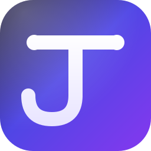
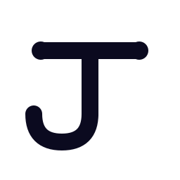
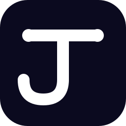
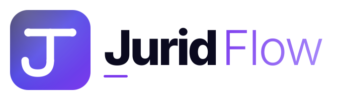
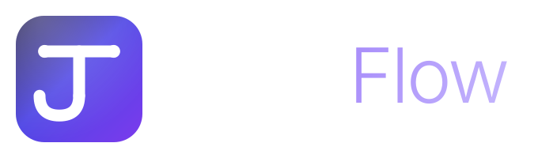

O sistema jurídico que une autoridade e fluxo. Uma marca pensada para escritórios que querem peso institucional e agilidade tecnológica no mesmo gesto.
Um J geométrico que sintetiza três ideias em uma forma: a barra superior com pesos nas extremidades evoca o equilíbrio da balança da justiça, a haste vertical é o pilar / coluna dos tribunais, e o gancho fluido na base representa o movimento, a automação, o Flow. Sem ornamentos: a marca confia na própria geometria.


Use a versão horizontal em assinatura de e-mail, cabeçalho do app, documentos e materiais institucionais. O contraste tipográfico entre Jurid (ExtraBold) e Flow (Light) reforça o conceito.


O símbolo permanece legível de favicon (16px) a outdoor. Tamanho mínimo recomendado: 24px para uso digital.
Construída sobre OKLCH (alinhada ao tema atual do app) com gradiente primário que vai do índigo profundo ao violeta vibrante — confiança institucional encontra energia tecnológica.
Mantendo a fonte do produto, exploramos o contraste entre pesos para criar hierarquia: ExtraBold para o lado "Jurid", Light para "Flow".
Símbolo simplificado, legível em 16px.
Logo composta em layout institucional.
Selo único em diferentes raios.